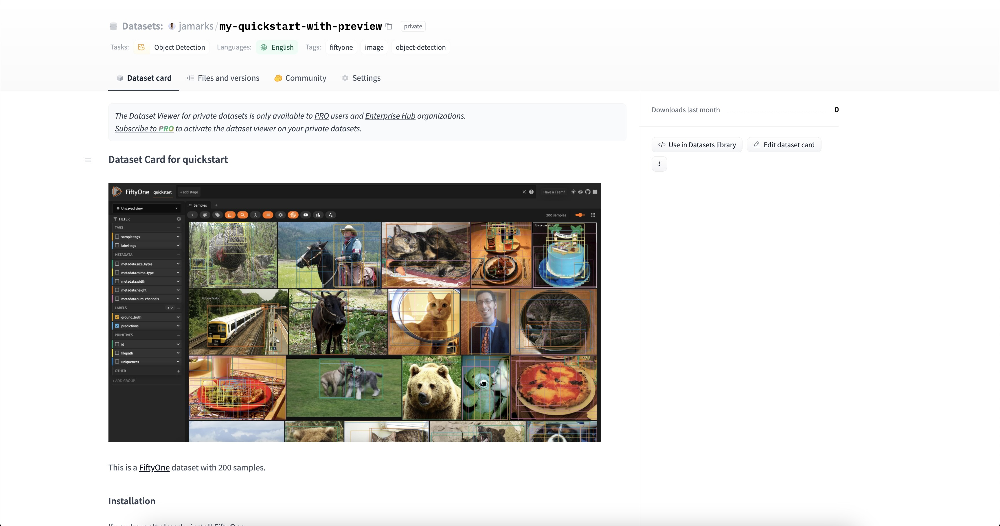

Hugging Face Integration¶
FiftyOne integrates natively with Hugging Face’s Transformers library, so you can load, fine-tune, and run inference with your favorite Transformers models on your FiftyOne datasets with just a few lines of code!
FiftyOne also integrates with the Hugging Face Hub, so you can push datasets to and load datasets from the Hub with ease.
Transformers Library¶
Setup¶
To get started with
Transformers, just install the
transformers package:
pip install -U transformers
Inference¶
All
Transformers models
that support image classification, object detection, semantic segmentation, or
monocular depth estimation tasks can be passed directly to your FiftyOne dataset’s
apply_model()
method.
The examples below show how to run inference with various Transformers models on the following sample dataset:
import fiftyone as fo
import fiftyone.zoo as foz
dataset = foz.load_zoo_dataset("quickstart", max_samples=25)
dataset.select_fields().keep_fields()
Image classification¶
You can pass transformers classification models directly to FiftyOne
dataset’s
apply_model()
method:
# BeiT
from transformers import BeitForImageClassification
model = BeitForImageClassification.from_pretrained(
"microsoft/beit-base-patch16-224"
)
# DeiT
from transformers import DeiTForImageClassification
model = DeiTForImageClassification.from_pretrained(
"facebook/deit-base-distilled-patch16-224"
)
# DINOv2
from transformers import Dinov2ForImageClassification
model = Dinov2ForImageClassification.from_pretrained(
"facebook/dinov2-small-imagenet1k-1-layer"
)
# MobileNetV2
from transformers import MobileNetV2ForImageClassification
model = MobileNetV2ForImageClassification.from_pretrained(
"google/mobilenet_v2_1.0_224"
)
# Swin Transformer
from transformers import SwinForImageClassification
model = SwinForImageClassification.from_pretrained(
"microsoft/swin-tiny-patch4-window7-224"
)
# ViT
from transformers import ViTForImageClassification
model = ViTForImageClassification.from_pretrained(
"google/vit-base-patch16-224"
)
# ViT-Hybrid
from transformers import ViTHybridForImageClassification
model = ViTHybridForImageClassification.from_pretrained(
"google/vit-hybrid-base-bit-384"
)
# Any auto model
from transformers import AutoModelForImageClassification
model = AutoModelForImageClassification.from_pretrained(
"facebook/levit-128S"
)
dataset.apply_model(model, label_field="classif_predictions")
session = fo.launch_app(dataset)
Alternatively, you can manually run inference with the transformers model and
then use the
to_classification()
utility to convert the predictions to FiftyOne format:
from PIL import Image
import torch
import fiftyone.utils.transformers as fout
from transformers import ViTHybridForImageClassification, AutoProcessor
transformers_model = ViTHybridForImageClassification.from_pretrained(
"google/vit-hybrid-base-bit-384"
)
processor = AutoProcessor.from_pretrained("google/vit-hybrid-base-bit-384")
id2label = transformers_model.config.id2label
for sample in dataset.iter_samples(progress=True):
image = Image.open(sample.filepath)
inputs = processor(image, return_tensors="pt")
with torch.no_grad():
result = transformers_model(**inputs)
sample["classif_predictions"] = fout.to_classification(result, id2label)
sample.save()
Finally, you can load transformers models directly from the
FiftyOne Model Zoo!
To load a transformers classification model from the zoo, specify
"classification-transformer-torch" as the first argument, and pass in the
model’s name or path as a keyword argument:
import fiftyone.zoo as foz
model = foz.load_zoo_model(
"classification-transformer-torch",
name_or_path="facebook/levit-128S", # HF model name or path
)
dataset.apply_model(model, label_field="levit")
session = fo.launch_app(dataset)
Object detection¶
You can pass transformers detection models directly to your FiftyOne
dataset’s
apply_model()
method:
# DETA
from transformers import DetaForObjectDetection
model = DetaForObjectDetection.from_pretrained(
"jozhang97/deta-swin-large"
)
# DETR
from transformers import DetrForObjectDetection
model = DetrForObjectDetection.from_pretrained(
"facebook/detr-resnet-50"
)
# DeformableDETR
from transformers import DeformableDetrForObjectDetection
model = DeformableDetrForObjectDetection.from_pretrained(
"SenseTime/deformable-detr"
)
# Table Transformer
from transformers import TableTransformerForObjectDetection
model = TableTransformerForObjectDetection.from_pretrained(
"microsoft/table-transformer-detection"
)
# YOLOS
from transformers import YolosForObjectDetection
model = YolosForObjectDetection.from_pretrained(
"hustvl/yolos-tiny"
)
# Any auto model
from transformers import AutoModelForObjectDetection
model = AutoModelForObjectDetection.from_pretrained(
"microsoft/conditional-detr-resnet-50"
)
dataset.apply_model(model, label_field="det_predictions")
session = fo.launch_app(dataset)
Alternatively, you can manually run inference with the transformers model and
then use the
to_detections() utility to
convert the predictions to FiftyOne format:
from PIL import Image
import torch
import fiftyone.utils.transformers as fout
from transformers import AutoModelForObjectDetection, AutoProcessor
transformers_model = AutoModelForObjectDetection.from_pretrained(
"microsoft/conditional-detr-resnet-50"
)
processor = AutoProcessor.from_pretrained(
"microsoft/conditional-detr-resnet-50"
)
id2label = transformers_model.config.id2label
for sample in dataset.iter_samples(progress=True):
image = Image.open(sample.filepath)
inputs = processor(image, return_tensors="pt")
with torch.no_grad():
outputs = transformers_model(**inputs)
target_sizes = torch.tensor([image.size[::-1]])
result = processor.post_process_object_detection(
outputs, target_sizes=target_sizes
)
sample["det_predictions"] = fout.to_detections(
result, id2label, [image.size]
)
sample.save()
Finally, you can load transformers models directly from the
FiftyOne Model Zoo!
To load a transformers detection model from the zoo, specify
"detection-transformer-torch" as the first argument, and pass in the model’s
name or path as a keyword argument:
import fiftyone.zoo as foz
model = foz.load_zoo_model(
"detection-transformer-torch",
name_or_path="facebook/detr-resnet-50", # HF model name or path
)
dataset.apply_model(model, label_field="detr")
session = fo.launch_app(dataset)
Semantic segmentation¶
You can pass a transformers semantic segmentation model directly to your
FiftyOne dataset’s
apply_model()
method:
# Mask2Former
from transformers import Mask2FormerForUniversalSegmentation
model = Mask2FormerForUniversalSegmentation.from_pretrained(
"facebook/mask2former-swin-small-coco-instance"
)
# Mask2Former
from transformers import MaskFormerForInstanceSegmentation
model = MaskFormerForInstanceSegmentation.from_pretrained(
"facebook/maskformer-swin-base-ade"
)
# Segformer
from transformers import SegformerForSemanticSegmentation
model = SegformerForSemanticSegmentation.from_pretrained(
"nvidia/segformer-b0-finetuned-ade-512-512"
)
# Any auto model
from transformers import AutoModelForSemanticSegmentation
model = AutoModelForSemanticSegmentation.from_pretrained(
"Intel/dpt-large-ade"
)
dataset.apply_model(model, label_field="seg_predictions")
dataset.default_mask_targets = model.config.id2label
session = fo.launch_app(dataset)
Alternatively, you can manually run inference with the transformers model and
then use the
to_segmentation() utility
to convert the predictions to FiftyOne format:
from PIL import Image
import fiftyone.utils.transformers as fout
from transformers import AutoModelForSemanticSegmentation, AutoProcessor
transformers_model = AutoModelForSemanticSegmentation.from_pretrained(
"Intel/dpt-large-ade"
)
processor = AutoProcessor.from_pretrained("Intel/dpt-large-ade")
for sample in dataset.iter_samples(progress=True):
image = Image.open(sample.filepath)
inputs = processor(image, return_tensors="pt")
target_size = [image.size[::-1]]
with torch.no_grad():
output = transformers_model(**inputs)
result = processor.post_process_semantic_segmentation(
output, target_sizes=target_size
)
sample["seg_predictions"] = fout.to_segmentation(result)
sample.save()
Finally, you can load transformers models directly from the
FiftyOne Model Zoo!
To load a transformers semantic segmentation model from the zoo, specify
"segmentation-transformer-torch" as the first argument, and pass in the
model’s name or path as a keyword argument:
import fiftyone.zoo as foz
model = foz.load_zoo_model(
"segmentation-transformer-torch",
name_or_path="nvidia/segformer-b0-finetuned-ade-512-512",
)
dataset.apply_model(model, label_field="segformer")
session = fo.launch_app(dataset)
Monocular depth estimation¶
You can pass a transformers monocular depth estimation model directly to your
FiftyOne dataset’s apply_model()
method:
# DPT
from transformers import DPTForDepthEstimation
model = DPTForDepthEstimation.from_pretrained("Intel/dpt-large")
# GLPN
from transformers import GLPNForDepthEstimation
model = GLPNForDepthEstimation.from_pretrained("vinvino02/glpn-kitti")
# Depth Anything
from transformers import AutoModelForDepthEstimation
model = AutoModelForDepthEstimation.from_pretrained("LiheYoung/depth-anything-small-hf")
# Depth Anything-V2
from transformers import AutoModelForDepthEstimation
model = AutoModelForDepthEstimation.from_pretrained("depth-anything/Depth-Anything-V2-Small-hf")
dataset.apply_model(model, label_field="depth_predictions")
session = fo.launch_app(dataset)
Alternatively, you can load transformers depth estimation models directly from
the FiftyOne Model Zoo!
To load a transformers depth estimation model from the zoo, specify
"depth-estimation-transformer-torch" as the first argument, and pass in the
model’s name or path as a keyword argument:
import fiftyone.zoo as foz
model = foz.load_zoo_model(
"depth-estimation-transformer-torch",
name_or_path="Intel/dpt-hybrid-midas",
)
dataset.apply_model(model, label_field="dpt_hybrid_midas")
session = fo.launch_app(dataset)
Zero-shot classification¶
Zero-shot image classification models from transformers can be loaded
directly from the FiftyOne Model Zoo!
To load a transformers zero-shot classification model from the zoo, specify
"zero-shot-classification-transformer-torch" as the first argument, and pass
in the model’s name or path as a keyword argument:
import fiftyone.zoo as foz
model = foz.load_zoo_model(
"zero-shot-classification-transformer-torch",
name_or_path="BAAI/AltCLIP", # HF model name or path
classes=["cat", "dog", "bird", "fish", "turtle"], # optional
)
Once loaded, you can pass the model directly to your FiftyOne dataset’s
apply_model()
method:
dataset.apply_model(model, label_field="altclip")
session = fo.launch_app(dataset)
You can also generate embeddings for the samples in your dataset with zero shot models as follows:
import fiftyone.zoo as foz
model = foz.load_zoo_model(
"zero-shot-classification-transformer-torch",
name_or_path="BAAI/AltCLIP", # HF model name or path
)
dataset.compute_embeddings(model, embeddings_field="altclip_embeddings")
session = fo.launch_app(dataset)
You can also change the label classes of zero shot models any time by setting
the classes attribute of the model:
model.classes = ["cat", "dog", "bird", "fish", "turtle"]
dataset.apply_model(model, label_field="altclip")
session = fo.launch_app(dataset)
The
convert_transformers_model()
utility also allows you to manually convert a zero-shot transformers model to
FiftyOne format:
import fiftyone.utils.transformers as fout
from transformers import CLIPSegModel
transformers_model = CLIPSegModel.from_pretrained(
"CIDAS/clipseg-rd64-refined"
)
model = fout.convert_transformers_model(
transformers_model,
task="image-classification", # or "semantic-segmentation"
)
Note
Some zero-shot models are compatible with multiple tasks, so it is recommended that you specify the task type when converting the model.
Zero-shot object detection¶
Zero-shot object detection models from transformers can be loaded directly
from the FiftyOne Model Zoo!
To load a transformers zero-shot object detection model from the zoo, specify
"zero-shot-detection-transformer-torch" as the first argument, and pass
in the model’s name or path as a keyword argument. You can optionally pass in a
list of label classes as a keyword argument classes:
import fiftyone.zoo as foz
model = foz.load_zoo_model(
"zero-shot-detection-transformer-torch",
name_or_path="google/owlvit-base-patch32", # HF model name or path
classes=["cat", "dog", "bird", "fish", "turtle"], # optional
)
The
convert_transformers_model()
utility also allows you to manually convert a zero-shot transformers model to
FiftyOne format:
import fiftyone.utils.transformers as fout
from transformers import OwlViTForObjectDetection
transformers_model = OwlViTForObjectDetection.from_pretrained(
"google/owlvit-base-patch32"
)
model = fout.convert_transformers_model(
transformers_model,
task="object-detection",
)
Note
Some zero-shot models are compatible with multiple tasks, so it is recommended that you specify the task type when converting the model.
As of transformers>=4.40.0 and fiftyone>=0.24.0, you can also use
Grounding DINO
models for zero-shot object detection:
import fiftyone.zoo as foz
model = foz.load_zoo_model(
"zero-shot-detection-transformer-torch",
name_or_path="IDEA-Research/grounding-dino-tiny",
classes=["cat"],
)
dataset.apply_model(model, label_field="cats", confidence_thresh=0.2)
Note
The confidence_thresh parameter is optional and can be used to filter out
predictions with confidence scores below the specified threshold. You may
need to adjust this value based on the model and dataset you are working.
Also note that whereas OwlViT models accept multiple classes, Grounding DINO
models only accept a single class.
Batch inference¶
When using
apply_model(),
you can request batch inference by passing the optional batch_size parameter:
dataset.apply_model(model, label_field="det_predictions", batch_size=16)
The manual inference loops can be also executed using batch inference via the pattern below:
from fiftyone.core.utils import iter_batches
import fiftyone.utils.transformers as fout
# Load a detection model and its corresponding processor
from transformers import YolosForObjectDetection, AutoProcessor
transformers_model = YolosForObjectDetection.from_pretrained(
"hustvl/yolos-tiny"
)
processor = AutoProcessor.from_pretrained("hustvl/yolos-tiny")
id2label = transformers_model.config.id2label
filepaths = dataset.values("filepath")
batch_size = 16
predictions = []
for paths in iter_batches(filepaths, batch_size):
images = [Image.open(p) for p in paths]
image_sizes = [i.size for i in images]
target_sizes = torch.tensor([image.size[::-1] for image in images])
inputs = processor(images, return_tensors="pt")
with torch.no_grad():
outputs = transformers_model(**inputs)
results = processor.post_process_object_detection(
outputs, target_sizes=target_sizes
)
predictions.extend(fout.to_detections(results, id2label, image_sizes))
dataset.set_values("det_predictions", predictions)
Note
See this section for more information about performing batch updates to your FiftyOne datasets.
Embeddings¶
Any transformers model that supports image classification or object detection
tasks — zero-shot or otherwise — can be used to compute embeddings for your
samples.
Note
For zero-shot models, FiftyOne will use the transformers model’s
get_image_features() method to extract embeddings.
For non-zero-shot models, regardless of whether you use a classification,
detection, or base model, FiftyOne will extract embeddings from the
last_hidden_state of the model’s base encoder.
Image embeddings¶
To compute embeddings for images, you can pass the transformers model
directly to your FiftyOne dataset’s
compute_embeddings()
method:
# Embeddings from base model
from transformers import BeitModel
model = BeitModel.from_pretrained(
"microsoft/beit-base-patch16-224-pt22k"
)
# Embeddings from classification model
from transformers import BeitForImageClassification
model = BeitForImageClassification.from_pretrained(
"microsoft/beit-base-patch16-224"
)
# Embeddings from detection model
from transformers import DetaForObjectDetection
model = DetaForObjectDetection.from_pretrained(
"jozhang97/deta-swin-large-o365"
)
# Embeddings from zero-shot classification model
from transformers import AltCLIPModel
model = AltCLIPModel.from_pretrained(
"BAAI/AltCLIP"
)
# Embeddings from zero-shot detection model
from transformers import OwlViTForObjectDetection
model = OwlViTForObjectDetection.from_pretrained(
"google/owlvit-base-patch32"
)
import fiftyone as fo
import fiftyone.zoo as foz
dataset = foz.load_zoo_dataset("quickstart", max_samples=25)
dataset.select_fields().keep_fields()
dataset.compute_embeddings(model, embeddings_field="embeddings")
Alternatively, you can use the
convert_transformers_model()
utility to convert a transformers model to FiftyOne format, which allows you
to check the model’s
has_embeddings property to
see if the model can be used to generate embeddings:
import numpy as np
from PIL import Image
import fiftyone.utils.transformers as fout
from transformers import BeitModel
transformers_model = BeitModel.from_pretrained(
"microsoft/beit-base-patch16-224-pt22k"
)
model = fout.convert_transformers_model(transformers_model)
print(model.has_embeddings) # True
# Embed an image directly
image = Image.open(dataset.first().filepath)
embedding = model.embed(np.array(image))
Text embeddings¶
Zero-shot image classification and object detection models from transformers
can also be used to compute embeddings for text:
import fiftyone as fo
import fiftyone.zoo as foz
dataset = foz.load_zoo_dataset("quickstart", max_samples=25)
dataset.select_fields().keep_fields()
model = foz.load_zoo_model(
"zero-shot-classification-transformer-torch",
name_or_path="BAAI/AltCLIP",
)
embedding = model.embed_prompt("a photo of a dog")
You can check whether a model supports text embeddings by checking the
can_embed_prompts
property:
import fiftyone.zoo as foz
# A zero-shot model that supports text embeddings
model = foz.load_zoo_model(
"zero-shot-classification-transformer-torch",
name_or_path="BAAI/AltCLIP",
)
print(model.can_embed_prompts) # True
# A classification model that does not support text embeddings
model = foz.load_zoo_model(
"classification-transformer-torch",
name_or_path="microsoft/beit-base-patch16-224",
)
print(model.can_embed_prompts) # False
Batch embeddings¶
You can request batch inference by passing the optional batch_size parameter
to
compute_embeddings():
dataset.compute_embeddings(model, embeddings_field="embeddings", batch_size=16)
Patch embeddings¶
You can compute embeddings for image patches by passing transformers models
directly to your FiftyOne dataset’s
compute_patch_embeddings()
method:
import fiftyone as fo
import fiftyone.zoo as foz
import fiftyone.utils.transformers as fout
dataset = foz.load_zoo_dataset("quickstart", max_samples=25)
from transformers import BeitModel
model = BeitModel.from_pretrained(
"microsoft/beit-base-patch16-224-pt22k"
)
dataset.compute_patch_embeddings(
model,
patches_field="ground_truth",
embeddings_field="embeddings",
)
Brain methods¶
Because transformers models can be used to compute embeddings, they can be
passed to Brain methods like
compute_similarity() and
compute_visualization():
import fiftyone as fo
import fiftyone.brain as fob
import fiftyone.zoo as foz
dataset = foz.load_zoo_dataset("quickstart", max_samples=25)
# Classification model
from transformers import BeitModel
transformers_model = BeitModel.from_pretrained(
"microsoft/beit-base-patch16-224-pt22k"
)
# Detection model
from transformers import DetaForObjectDetection
transformers_model = DetaForObjectDetection.from_pretrained(
"jozhang97/deta-swin-large"
)
# Zero-shot classification model
from transformers import AutoModelForImageClassification
transformers_model = AutoModelForImageClassification.from_pretrained(
"BAAI/AltCLIP"
)
# Zero-shot detection model
from transformers import OwlViTForObjectDetection
transformers_model = OwlViTForObjectDetection.from_pretrained(
"google/owlvit-base-patch32"
)
# Option 1: directly pass `transformers` model
fob.compute_similarity(dataset, model=transformers_model, brain_key="sim1")
fob.compute_visualization(dataset, model=transformers_model, brain_key="vis1")
# Option 2: pass pre-computed embeddings
dataset.compute_embeddings(transformers_model, embeddings_field="embeddings")
fob.compute_similarity(dataset, embeddings="embeddings", brain_key="sim2")
fob.compute_visualization(dataset, embeddings="embeddings", brain_key="vis2")
Because transformers zero-shot models can be used to embed text, they can
also be used to construct similarity indexes on your datasets which support
natural language queries.
To use this functionality, you must pass the model by name into the brain
method, along with any necessary keyword arguments that must be passed to
load_zoo_model() to load the correct
model:
import fiftyone as fo
import fiftyone.brain as fob
import fiftyone.zoo as foz
dataset = foz.load_zoo_dataset("quickstart", max_samples=25)
fob.compute_similarity(
dataset,
brain_key="zero_shot_sim",
model="zero-shot-classification-transformer-torch",
name_or_path="BAAI/AltCLIP",
)
view = dataset.sort_by_similarity("A photo of a dog", k=25)
session = fo.launch_app(view)
Hugging Face Hub¶
FiftyOne integrates with the Hugging Face Hub to allow you to push datasets to and load datasets from the Hub with ease. This integration simplifies the process of sharing datasets with the machine learning and computer vision community, and allows you to easily access and work with many of the most popular vision and multimodal datasets available!
Setup¶
To push datasets to and load datasets from the Hugging Face Hub, you will need the Hugging Face Hub Python client, which you can install via PyPI:
pip install "huggingface_hub>=0.20.0"
To push a dataset to the Hub, and in some cases, to access a dataset on the hub, you will need to have a Hugging Face Hub account.
Hugging Face handles authentication via tokens, which you can obtain by logging into your account and navigating to the Access Tokens section of your profile. At the bottom of this page, you can create a new token with write or read access to the Hub. Once you have your token, you can set it as an environment variable:
export HF_TOKEN="<your-token-here>"
Pushing datasets to the Hub¶
If you are working with a dataset in FiftyOne and you want to quickly share it
with others, you can do so via the
push_to_hub()
function, which takes two positional arguments:
the FiftyOne sample collection (a
DatasetorDatasetView)the
repo_name, which will be combined with your Hugging Face username or organization name to construct therepo_idwhere the sample collection will be uploaded.
As you will see, this simple function allows you to push datasets and filtered views containing images, videos, point clouds, and other multimodal data to the Hugging Face Hub, providing you with incredible flexibility in the process.
Basic usage¶
The basic recipe for pushing a FiftyOne dataset to the Hub is just two lines of code. As a starting point, let’s use the example Quickstart dataset dataset from the FiftyOne Dataset Zoo:
import fiftyone as fo
import fiftyone.zoo as foz
dataset = foz.load_zoo_dataset("quickstart")
To push the dataset to the Hugging Face Hub, all you need to do is call
push_to_hub() with the dataset
and the desired repo_name:
from fiftyone.utils.huggingface import push_to_hub
push_to_hub(dataset, "my-quickstart-dataset")
When you run this code, a few things happen:
The dataset and its media files are exported to a temporary directory and uploaded to the specified Hugging Face repo.
A
fiftyone.ymlconfig file for the dataset is generated and uploaded to the repo, which contains all of the necessary information so that the dataset can be loaded withload_from_hub().A Hugging Face Dataset Card for the dataset is auto-generated, providing tags, metadata, license info, and a code snippet illustrating how to load the dataset from the hub.
Your dataset will be available on the Hub at the following URL:
https://huggingface.co/datasets/<your-username-or-org-name>/my-quickstart-dataset
Pushing a DatasetView to the Hub works in exactly the same way. For example,
if you want to push a filtered view of the quickstart dataset containing only
predictions with high confidence, you can do so by creating the view as usual,
and then passing that in to
push_to_hub():
from fiftyone.utils.huggingface import push_to_hub
# Create view with high confidence predictions
view = dataset.filter_labels("predictions", F("confidence") > 0.95)
# Push view to the Hub as a new dataset
push_to_hub(view, "my-quickstart-high-conf")
When you do so, note that the view is exported as a new dataset, and other details from the original dataset are not included.
FiftyOne is a visual toolkit, so when you push a dataset to the Hub, you can
optionally include a preview (image, gif, or video) of the dataset, that will be
displayed on the dataset page. To do this, you can pass the preview_path
argument to push_to_hub(), with
either a relative or absolute path to the preview file on your local machine:
import fiftyone as fo
import fiftyone.zoo as foz
from fiftyone.utils.huggingface import push_to_hub
dataset = foz.load_zoo_dataset("quickstart")
session = fo.launch_app(dataset)
# Screenshot and save the preview image to a file...
push_to_hub(
dataset,
"my-quickstart-with-preview",
preview_path="/path/to/preview.jpg"
)
The preview file will be uploaded to the Hub along with the dataset, and will be displayed on the dataset card!
Pushing large datasets¶
Large datasets with many samples require a bit more care when pushing to the
Hub. Hugging Face limits the number of files that can be uploaded in a single
directory to 10000, so if your dataset contains more than 10000 samples, the
data will need to be split into multiple directories. FiftyOne handles this
automatically when pushing large datasets to the Hub, but you can manually
configure the number of samples per directory by passing the chunk_size
argument to push_to_hub():
from fiftyone.utils.huggingface import push_to_hub
# Limit to 100 images per directory
push_to_hub(dataset, "my-large-dataset", chunk_size=100)
Note
The chunk_size argument is currently only supported when exporting in
FiftyOneDataset format (the default).
Advanced usage¶
The push_to_hub() function
provides a number of optional arguments that allow you to customize how your
dataset is pushed to the Hub, including whether the dataset is public or private,
what license it is released under, and more.
FiftyOne’s push_to_hub()
function supports the Hugging Face Hub API arguments private and exist_ok.
private (bool): Whether the dataset should be private. If
True, the dataset will be private and only accessible to you. IfFalse, the dataset will be public and accessible to anyone with the link. Defaults toFalse.- exist_ok (bool): Whether to overwrite an existing dataset with the same
repo_name. IfTrue, the existing dataset will be overwritten. IfFalse, an error will be raised if a dataset with the samerepo_namealready exists. Defaults toFalse.
For example, to push a dataset to the Hub as private, you can do the following:
from fiftyone.utils.huggingface import push_to_hub
push_to_hub(dataset, "my-private-dataset", private=True)
You can also specify the tags, license, and description of the dataset,
all of which will propagate to the fiftyone.yml config file and the Hugging
Face Dataset Card. For example, to push a video action recognition dataset with
an MIT license and a description, you can do the following:
import fiftyone as fo
import fiftyone.zoo as foz
from fiftyone.utils.huggingface import push_to_hub
dataset = foz.load_zoo_dataset("quickstart-video")
push_to_hub(
dataset,
"my-action-recognition-dataset",
tags=["video", "action-recognition"],
license="mit",
description="A dataset of videos for action recognition tasks",
)
The pushed dataset will be available on the Hub and the dataset page will look like this:

Note
The tags argument can be a string or a list of strings. The tag fiftyone
is automatically added to all datasets pushed with FiftyOne, communicating
that the dataset was created with FiftyOne and can be loaded with the
load_from_hub() function.
The license is specified as a string. For a list of supported licenses, see the Hugging Face Hub documentation.
The description argument can be used for whatever you like. When the dataset
is loaded from the Hub, this description will be accessible via the dataset’s
description property.
Additionally, you can specify the “format†of the uploaded dataset. By default, the format is the standard FiftyOneDataset format, but you can also specify the data is uploaded in any of these common formats. For example, to push the quickstart dataset in COCO format, with a Creative Commons Attribution 4.0 license, you can do the following:
import fiftyone as fo
import fiftyone.zoo as foz
from fiftyone.utils.huggingface import push_to_hub
import fiftyone.types as fot
dataset = foz.load_zoo_dataset("quickstart")
dataset_type = fot.dataset_types.COCODetectionDataset
push_to_hub(
dataset,
"quickstart-coco",
dataset_type=dataset_type,
license="cc-by-4.0",
label_fields="*", # convert all label fields, not just ground truth
)
Note
The label_fields argument is used to specify which label fields to convert
to the specified dataset type. By default when using some dataset formats,
only the ground_truth label field is converted. If you want to convert all
label fields, you can set label_fields="*". If you want to convert specific
label fields, you can pass a list of field names.
Additionally, you can specify the minimum version of FiftyOne required to load
the dataset by passing the min_fiftyone_version argument. This is useful when
the dataset utilizes features that are only available in versions above a certain
release. For example, to specify that the dataset requires fiftyone>=0.23.0:
import fiftyone as fo
import fiftyone.zoo as foz
from fiftyone.utils.huggingface import push_to_hub
dataset = foz.load_zoo_dataset("quickstart")
push_to_hub(
dataset,
"quickstart-min-version",
min_fiftyone_version="0.23.0",
)
Loading datasets from the Hub¶
To load a dataset from the Hugging Face Hub, you can use the
load_from_hub() function.
This function supports loading datasets in any of the
common formats supported by FiftyOne, as well
as image-based datasets stored via Parquet files,
as is common with datasets from the
datasets library which have
been uploaded to the Hugging Face Hub. Below, we will walk through all of the
ways you can load datasets from the Hub.
In its simplest usage, the
load_from_hub() function
only requires the repo_id of the dataset you want to load. For example, to
load the private dataset that we
pushed to the Hub earlier, you can do the following:
from fiftyone.utils.huggingface import load_from_hub
dataset = load_from_hub("<username-or-org>/my-private-dataset")
Note
As long as you have an environment variable HF_TOKEN set with your Hugging
Face token (with read access), you can load private or gated datasets that you have
access to from the Hub.
Loading datasets from repo configs¶
When you push a dataset to the Hub using
push_to_hub(), a fiftyone.yml
config file is generated and uploaded to the repo. This file contains all of the
information necessary to load the dataset from the Hugging Face Hub. More
generally, any repo on the Hugging Face Hub that contains a fiftyone.yml or
fiftyone.yaml file (assuming the file is correctly formatted) can be loaded
using the load_from_hub()
function by passing the repo_id of the dataset, without needing to specify any
additional arguments.
For example, to load the quickstart dataset that we pushed to the Hub earlier,
from fiftyone.utils.huggingface import load_from_hub
dataset = load_from_hub("<username>/my-quickstart-dataset")
where <username> is your Hugging Face username or organization name.
Loading datasets from local configs¶
If the repo was uploaded to the Hugging Face Hub via FiftyOne’s
push_to_hub() function, then
the fiftyone.yml config file will be generated and uploaded to the repo.
However, some common datasets like
mnist were uploaded to the Hub
using the datasets library and do not contain a fiftyone.yml or
fiftyone.yaml file. If you know how the dataset is structured, you can load
the dataset by passing the path to a local yaml config file that describes the
dataset via the config_file keyword argument.
For example, to load the mnist dataset from the Hub, you might have a local
yaml config file like this:
format: ParquetFilesDataset
classification_fields: label
To load the dataset from the Hub, you can pass the repo_id of the dataset and
the path to the local yaml config file:
from fiftyone.utils.huggingface import load_from_hub
dataset = load_from_hub(
"ylecun/mnist",
config_file="/path/to/mnist.yml",
)
For a comprehensive list of the supported fields in the yaml config file, see Supported config fields.
Loading datasets with config kwargs¶
In addition to loading datasets from repo configs and local configs, you can
also load datasets from the Hub by passing the necessary config arguments
directly to load_from_hub().
This is useful when you want to load a dataset from the Hub that does not have
a fiftyone.yml or fiftyone.yaml file, and the structure of the dataset is
simple enough that you can specify the necessary arguments directly.
For example, to load the mnist dataset from the Hub, you can pass the format
and classification_fields arguments directly:
from fiftyone.utils.huggingface import load_from_hub
dataset = load_from_hub(
"ylecun/mnist",
format="ParquetFilesDataset",
classification_fields="label",
)
This will tell FiftyOne that the data is stored in Parquet files, and that the
label field should be treated as a classification field, to be converted into
a Classification label field in the dataset.
Supported config fields¶
Whether you are loading a dataset from a repo config, a local config file, or passing the config arguments directly, you can specify a number of fields.
Broadly speaking, these fields fall into three categories: format specification, media field specification, and label field specification.
Let’s look at these categories in more detail:
Format specification:
format (str): The format of the dataset. This can be any of the common formats supported by FiftyOne — just pass the name of the format as a string. For example, to load a dataset in the COCO format, you can pass
format="COCODetectionDataset". To specify that the dataset is stored in Parquet files, you can passformat="ParquetFilesDataset"(or simplyformat="parquet"for short). This is the only required field.name (str): The name of the FiftyOne
Datasetto be created. If therepo_idis cumbersome, this can be used to specify a simpler default name. For example, for this sheep dataset rather than using therepo_idkeremberke/aerial-sheep-object-detection, you can specifyname="sheep-detection".subsets (str or list): The subset or subsets of the Hugging Face dataset that are compatible with this config, and are available to be loaded. In Hugging Face, the “dataset†in a repo can contain multiple “subsets”, which may or may not have the same schema. Take the Street View House Numbers dataset for example. This dataset has two subsets:
"cropped_digits"and"full_numbers". Thecropped_digitssubset contains classification labels, while thefull_numberssubset contains detection labels. A single config would not be able to specify the schema for both subsets, so you can specify the subset you want to load (or if you are the dataset author, which subset you want to allow people to load in this way) with thesubsetsfield. For example, to load thecropped_digitssubset of the SVHN dataset, you can passsubsets="cropped_digits". Note that this is not a required field, and by default all subsets are loaded. Also note that subsets are distinct from splits in the dataset, which are handled by thesplitsfield (see below).splits (str or list): The split or splits of the Hugging Face dataset that are compatible with this config, and are available to be loaded. As is standard for machine learning, many datasets are split into training, validation, and test sets. The specific names of these splits may vary from dataset to dataset, but
load_from_hub()identifies the names of all splits and by default, will assume that all of these splits are to be loaded. If you only want to load a specific split or splits, you can specify them with thesplitsfield. For example, to load the training split of the CIFAR10 dataset, you can passsplits="train". If you want to load multiple splits, you can pass them as a list, e.g.,splits=["train", "test"]. Note that this is not a required field, and by default all splits are loaded.
Media field specification:
While not all Parquet datasets contain media fields, all FiftyOne Sample objects
must be connected to at least one media file. The following fields can be used
to configure the media fields in the Hugging Face dataset that should be converted
to FiftyOne media fields:
filepath (str): In FiftyOne,
filepathis a default field that is used to store the path to the primary media file for each sample in the dataset. For Hugging Face parquet datasets, primary media fields for image datasets are typically stored in theimagecolumns, so this is where FiftyOne’sload_from_hub()looks by default. If the primary media field is stored in a different column, you can specify the column name with the keyfilepath. For example, the COYO-700M dataset has the primary media field referenced in theurlcolumn. Specifyingfilepath="url"will tell FiftyOne to look in theurlcolumn for the primary media file path. Images will be downloaded from the corresponding URLs and saved to disk.thumbnail_path (str): The field containing the path to a thumbnail image for each sample in the dataset, if such a field exists. If a
thumbnail_pathis specified, this media file will be shown in the sample grid in the FiftyOne App. This can be useful for quickly visualizing the dataset when the primary media field contains large (e.g., high-resolution) images. For more information on thumbnail images, see this section.additional_media_fields (dict): If each sample has multiple associated media files that you may want to visualize in the FiftyOne App, you can specify these non-default media fields in the
additional_media_fieldsdictionary, where the keys are the column names in the Hugging Face dataset and the values are the names of the fields in the FiftyOneDatasetthat will store the paths. Note that this is not the same as grouped datasets.
Label field specification:
FiftyOne’s Hugging Face Hub integration currently supports converting labels of
type Classification, Detections, and Segmentation from Hugging Face
Parquet datasets to FiftyOne label fields. The following fields can be used to
specify the label fields in the Hugging Face dataset that should be converted to
FiftyOne label fields:
classification_fields (str or list): The column or columns in the Hugging Face dataset that should be converted to FiftyOne
Classificationlabel fields. contain classification labels. For example, if the dataset contains alabelfield that contains classification labels, you can specifyclassification_fields="label". If the dataset contains multiple classification fields, you can specify them as a list, e.g.,classification_fields=["label1", "label2"]. This is not a required field, and if the dataset does not contain classification labels, you can omit it.detection_fields (str or list): The column or columns in the Hugging Face dataset that should be converted to FiftyOne
Detectionslabel fields. If the dataset contains detection labels, you can specify the column name or names here. For example, if the dataset contains adetectionsfield that contains detection labels, you can specifydetection_fields="detections". If the dataset contains multiple detection fields, you can specify them as a list, e.g.,detection_fields=["detections1", "detections2"]. This is not a required field, and if the dataset does not contain detection labels, you can omit it.mask_fields (str or list): The column or columns in the Hugging Face dataset that should be converted to FiftyOne
Segmentationlabel fields. The column in the Hugging Face dataset must contain an image or the URL for an image that can be used as a segmentation mask. If necessary, the images will be downloaded and saved to disk. If the dataset contains mask labels, you can specify the column name or names here. For example, if the dataset contains amasksfield that contains mask labels, you can specifymask_fields="masks". This is not a required field, and if the dataset does not contain mask labels, you can omit it.
Configuring the download process¶
When loading datasets from the Hugging Face Hub, FiftyOne will download the
all of the data specified by the repo_id and the config. If no splits or
subsets are listed in the config, this means that all samples across all splits
and subsets will be downloaded. This can be a time-consuming process, especially
for large datasets, and sometimes you may only want to download a fixed number
of samples to get started exploring the dataset.
FiftyOne’s load_from_hub()
function supports a variety of arguments that allow you to control the download
process, from the maximum number of samples to be downloaded to the batch size
to use when making requests to the Datasets Server. Here are the supported
arguments:
max_samples (int): The number of samples to download from the dataset. If not specified, all samples will be downloaded.
batch_size (int): The batch size to use when making requests to the Datasets Server. Defaults to 100, which is the max batch size allowed by the Datasets Server.
num_workers (int): The number of worker to use when downloading media files. If not specified, the number of workers will be resolved by looking at your FiftyOne Config.
splits (str or list): The split or splits of the Hugging Face dataset that you want to download. This overrides the
splitsfield in the config.subsets (str or list): The subset or subsets of the Hugging Face dataset that you want to download. This overrides the
subsetsfield in the config.overwrite (bool): Whether to overwrite existing an existing dataset with the same name. If
True, the existing dataset will be overwritten. IfFalse, an error will be raised if a dataset with the same name already exists. Defaults toFalse.persistent (bool): Whether to persist the dataset to the underlying database after it is loaded. If
True, the dataset will be available for loading in future FiftyOne sessions by passing the dataset’s name into FiftyOne’sload_dataset()function. Defaults toFalse.revision (str): The revision (specified by a commit hash to the Hugging Face repo) of the dataset to load. If not specified, the latest revision will be loaded.
Basic examples¶
Okay, so load_from_hub() is
very powerful, and can be used in a ton of ways. All of this flexibility
can be a bit overwhelming, so let’s walk through a few examples to show you how
easy it is in practice to load datasets from the Hugging Face Hub.
Note
To make these downloads as fast as possible, we recommend setting the
max_samples argument to a reasonable number, like 1000, to get a feel for
the dataset. If you like what you see, you can always download more samples!
Classification Datasets
Let’s start by loading the
MNIST dataset into FiftyOne. All you
need to do is pass the repo_id of the dataset — in this case "ylecun/mnist" — to
load_from_hub(), specify the
format as "parquet", and specify the classification_fields as "label":
from fiftyone.utils.huggingface import load_from_hub
dataset = load_from_hub(
"ylecun/mnist",
format="parquet",
classification_fields="label",
max_samples=1000,
)
session = fo.launch_app(dataset)
The same exact syntax works for the CIFAR-10
and FashionMNIST datasets,
which are also available on the Hub. In fact, you can load any of the following
classification datasets from the Hub using the same syntax, just by changing the
repo_id:
CIFAR-10 (use
"uoft-cs/cifar10")ImageNet (use
"ILSVRC/imagenet-1k")FashionMNIST (use
"zalando-datasets/fashion_mnist")Tiny ImageNet (use
"zh-plus/tiny-imagenet")Food-101 (use
"ethz/food101")Dog Food (use
"sasha/dog-food")ImageNet-Sketch (use
"songweig/imagenet_sketch")Oxford Flowers (use
"nelorth/oxford-flowers")Cats vs. Dogs (use
"microsoft/cats_vs_dogs")ObjectNet-1.0 (use
"timm/objectnet")
A very similar syntax can be used to load classification datasets that contain
multiple classification fields, such as
CIFAR-100 and the
WikiArt dataset. For example,
to load the CIFAR-100 dataset, you can specify the classification_fields as
["coarse_label", "fine_label"]:
from fiftyone.utils.huggingface import load_from_hub
dataset = load_from_hub(
"uoft-cs/cifar100",
format="parquet",
classification_fields=["coarse_label", "fine_label"],
max_samples=1000,
)
session = fo.launch_app(dataset)
To load the WikiArt dataset,
you can specify the classification_fields as ["artist", "genre", "style"]:
from fiftyone.utils.huggingface import load_from_hub
dataset = load_from_hub(
"huggan/wikiart",
format="parquet",
classification_fields=["artist", "genre", "style"],
max_samples=1000,
)
session = fo.launch_app(dataset)
As touched upon earlier, you can also load a classification subset of a
dataset. For example, to load the cropped_digits subset of the
Street View House Numbers dataset:
from fiftyone.utils.huggingface import load_from_hub
dataset = load_from_hub(
"ufldl-stanford/svhn",
format="parquet",
classification_fields="label",
subsets="cropped_digits",
max_samples=1000,
)
session = fo.launch_app(dataset)
Detection Datasets
Loading detection datasets from the Hub is just as easy. For example, to load
the MS COCO
dataset, you can specify the detection_fields as "objects", which is the
standard column name for detection features in Hugging Face datasets:
from fiftyone.utils.huggingface import load_from_hub
dataset = load_from_hub(
"detection-datasets/coco",
format="parquet",
detection_fields="objects",
max_samples=1000,
)
session = fo.launch_app(dataset)
The same syntax works for many other popular detection datasets on the Hub, including:
CPPE - 5 (use
"rishitdagli/cppe-5")WIDER FACE (use
"CUHK-CSE/wider_face")License Plate Object Detection (use
"keremberke/license-plate-object-detection")Aerial Sheep Object Detection (use
"keremberke/aerial-sheep-object-detection")
Some detection datasets have their detections stored under a column with a
different name. For example, the full_numbers subset of the
Street View House Numbers dataset
stores its detections under the column digits. To load this subset, you can
specify the detection_fields as "digits":
from fiftyone.utils.huggingface import load_from_hub
dataset = load_from_hub(
"ufldl-stanford/svhn",
format="parquet",
detection_fields="digits",
subsets="full_numbers",
max_samples=1000,
)
session = fo.launch_app(dataset)
Note
Not all detection datasets on the Hub are stored in a format that is currently supported by FiftyOne. For instance, the Fashionpedia dataset has detections stored in Pascal VOC format, which is not the standard Hugging Face format.
Segmentation Datasets
Loading segmentation datasets from the Hub is also a breeze. For example, to
load the “instance_segmentation” subset from
SceneParse150, all you
need to do is specify the mask_fields as "annotation":
from fiftyone.utils.huggingface import load_from_hub
dataset = load_from_hub(
"zhoubolei/scene_parse150",
format="parquet",
subsets="instance_segmentation",
mask_fields="annotation",
max_samples=1000,
)
session = fo.launch_app(dataset)
Many other segmentation datasets on the Hub can be loaded in the same way, such as ADE 20K Tiny:
from fiftyone.utils.huggingface import load_from_hub
dataset = load_from_hub(
"nateraw/ade20k-tiny",
format="parquet",
mask_fields="label",
)
# only 20 samples in the dataset
session = fo.launch_app(dataset)
In other cases, because there are now multiple image columns — one for the
sample image and one for the mask — the naming convention for the dataset might
be different, and you may need to explicitly specify the filepath. For
example, to load the
Sidewalk Semantic
dataset:
from fiftyone.utils.huggingface import load_from_hub
# Note: you need access to the dataset to load it!
dataset = load_from_hub(
"segments/sidewalk-semantic",
format="parquet",
filepath="pixel_values",
mask_fields="label",
max_samples=1000,
)
session = fo.launch_app(dataset)
Note
Once you have the dataset loaded into FiftyOne, you may want to set the dataset’s mask targets to specify the names of the classes represented in the segmentation masks.
Unlabelled Image Datasets
Some datasets on the Hub contain images and metadata in the form of features, but do not explicitly contain classification, detection, or segmentation labels. This is common for text-to-image tasks, as well as captioning and visual question answering tasks. These datasets can also be converted and loaded into FiftyOne! Once the dataset is loaded into FiftyOne, you can process the data and generate labels for whatever tasks you are interested in.
Let’s look at a few examples:
For DiffusionDB, you can load the dataset as follows:
from fiftyone.utils.huggingface import load_from_hub
dataset = load_from_hub(
"poloclub/diffusiondb",
format="parquet",
max_samples=1000,
)
session = fo.launch_app(dataset)
Here are some other popular datasets on the Hub that can be loaded following the same syntax:
Nouns: (use
"m1guelpf/nouns")New Yorker Caption Contest: (use
"jmhessel/newyorker_caption_contest")Captcha Dataset: (use
"project-sloth/captcha-images")MathVista: (use
"AI4Math/MathVista")TextVQA: (use
"textvqa")VQA-RAD: (use
"flaviagiammarino/vqa-rad")ScienceQA: (use
"derek-thomas/ScienceQA")PathVQA: (use
"flaviagiammarino/path-vqa")
Many other popular datasets on the Hub can be loaded in the same way, with slight
modifications to filepath or other arguments as needed. Here are a few examples:
For COYO-700M, we just
need to specify the filepath as "url":
from fiftyone.utils.huggingface import load_from_hub
dataset = load_from_hub(
"kakaobrain/coyo-700m",
format="parquet",
filepath="url",
max_samples=1000,
)
session = fo.launch_app(dataset)
For RedCaps, we instead use
"image_url" as the filepath:
from fiftyone.utils.huggingface import load_from_hub
dataset = load_from_hub(
"kdexd/red_caps",
format="parquet",
filepath="image_url",
max_samples=1000,
)
session = fo.launch_app(dataset)
For MMMU
(A Massive Multi-discipline Multimodal Understanding and Reasoning Benchmark for
Expert AGI), we use "image_1" as the filepath:
from fiftyone.utils.huggingface import load_from_hub
dataset = load_from_hub(
"MMMU/MMMU",
format="parquet",
filepath="image_1",
max_samples=1000,
)
session = fo.launch_app(dataset)
Advanced examples¶
The load_from_hub() function
also allows us to load datasets in much more complex formats, as well as with
more advanced configurations. Let’s walk through a few examples to show you how
to leverage the full power of FiftyOne’s Hugging Face Hub integration.
Loading Datasets from Revisions
When you load a dataset from the Hugging Face Hub, you are loading the latest
revision of the dataset. However, you can also load a specific revision of the
dataset by specifying the revision argument. For example, to load the last
revision of DiffusionDB before NSFW scores were added, you can specify this via:
from fiftyone.utils.huggingface import load_from_hub
dataset = load_from_hub(
"poloclub/diffusiondb",
format="parquet",
subset="2m_random_1k", ## just one of the subsets
max_samples=1000,
revision="5fa48ba66a44822d82d024d195fbe918e6c42ca6",
)
session = fo.launch_app(dataset)
Loading Datasets with Multiple Media Fields
Some datasets on the Hub contain multiple media fields for each sample. Take
MagicBrush for example, which
contains a "source_img" and a "target_img" for each sample, in addition
to a segmentation mask denoting the area of the source image to be modified. To
load this dataset, you can specify the filepath as "source_img" and the
target image via additional_media_fields. Because this is getting a bit more
complex, we’ll create a local yaml config file to specify the dataset format:
format: ParquetFilesDataset
name: magicbrush
filepath: source_img
additional_media_fields:
target_img: target_img
mask_fields: mask_img
Now, you can load the dataset using the local yaml config file:
from fiftyone.utils.huggingface import load_from_hub
dataset = load_from_hub(
"osunlp/MagicBrush",
config_file="/path/to/magicbrush.yml",
max_samples=1000,
)
session = fo.launch_app(dataset)
Customizing the Download Process
When loading datasets from the Hub, you can customize the download process by
specifying the batch_size, num_workers, and overwrite arguments. For
example, to download the full_numbers subset of the Street View House Numbers dataset with a batch size of 50 and 4
workers, you can do the following:
from fiftyone.utils.huggingface import load_from_hub
dataset = load_from_hub(
"ufldl-stanford/svhn",
format="parquet",
detection_fields="digits",
subsets="full_numbers",
max_samples=1000,
batch_size=50,
num_workers=4,
)
session = fo.launch_app(dataset)
Loading Private or Gated Datasets
Like public datasets, you can also load private or gated datasets from the Hub,
as long as you have the necessary permissions. If your Hugging Face token is
set as an environment variable HF_TOKEN, this is as simple as specifying the
repo_id of the dataset. If you don’t have your token set, or you need to use
a specific token for a specific dataset, you can specify the token argument.
You can do so following this recipe:
from fiftyone.utils.huggingface import load_from_hub
dataset = load_from_hub(
"my-private-dataset-repo-id",
token="<my-secret-token>",
...
)
session = fo.launch_app(dataset)